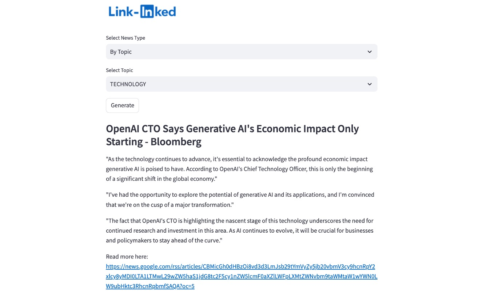
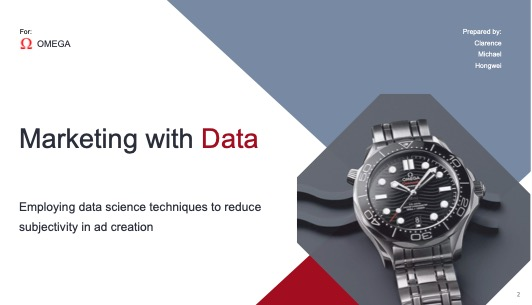

TaleR Swift - Creating Children's Tales Swiftly
TaleR Swift is an innovative storytelling app tailored for children, enabling the creation of customized stories in multiple languages (English, Chinese, Malay) and genres.
It features capabilities such as visual illustrations, audio narration via gTTS, and both random and manual story generation.
The app utilizes advanced technologies including STREAMLIT, GPT-4o, gTTS, and DALL·E 3 to enhance the interactive storytelling experience.

Link-Inked
Link-Inked is a web application developed with Streamlit to automate fetching and displaying news headlines from designated URLs.
It enables users to select intriguing headlines, retrieve the full content of articles, and produce insightful comments aimed at professional networks such as LinkedIn.
The application leverages OLLAMA for GenAI functionality.

Diabetes Predictor: MOH
This proposal outlines a data-driven solution aimed at addressing the high lifetime risk of diabetes among Singaporeans, as reported by the Ministry of Health.
Utilizing healthcare data and predictive analytics, the solution employs classification algorithms and population health data to identify individuals at high risk of diabetes.
It offers diabetes risk assessments for early detection and targeted interventions. Additionally, it enhances individual nutritional decision-making by providing healthier food suggestions.
The technology stack includes TensorFlow, SVM, Neural Network, XGBoost, and Streamlit.

Data-Driven Marketing: Omega Watches
The challenge in branding and advertising is the effective application of data-driven methods to text-based communications, such as brand taglines and marketing slogans.
By utilizing natural language processing (NLP), marketing decisions can be made with greater confidence and objectivity.
Techniques like Random Forest, Naive Bayes, and web scraping, combined with the Streamlit platform, can analyze and optimize the effectiveness of marketing content, thereby improving strategic messaging and communication efforts.

HDB resale price predictor
The team at PropNex has developed a predictive model to estimate HDB resale values, catering specifically to first-time family applicants whose numbers have surged from 19,000 in 2018 to 34,000 in 2021.
This model, which utilizes Linear Regression, GridSearchCV, and Streamlit, helps clients find resale HDB units near preferred primary schools based on their unique family needs.
By minimizing guesswork, this data-driven tool enhances the transaction experience, providing agents with a significant value-add for their clients.

Weather & Construction Fatalities
This research addresses the impact of heat and other weather conditions on fatalities among construction workers, an issue that may be intensifying due to global warming.
Utilizing data analysis tools such as Pandas, NumPy, Seaborn, and Matplotlib, the study seeks to identify and quantify the correlation between specific weather conditions and the incidence of deaths in the construction sector.
This analysis aims to provide insights that could lead to better safety protocols and preventative measures.